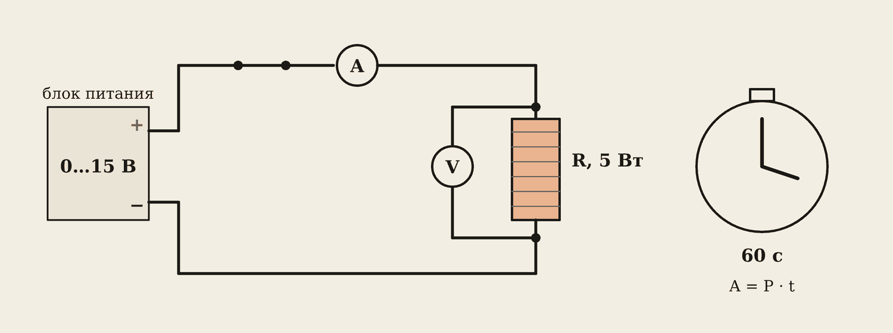
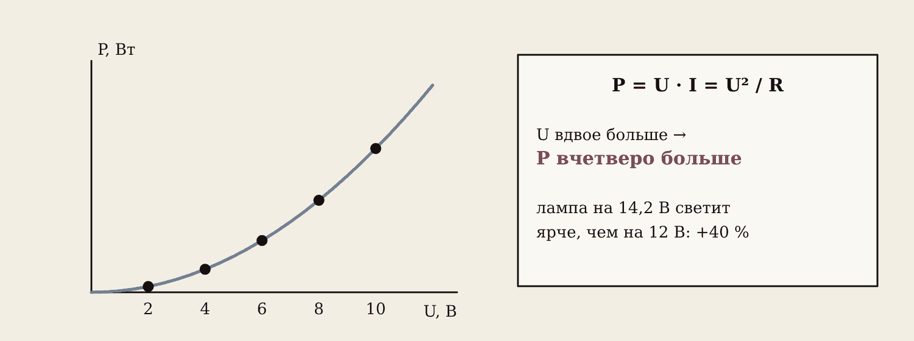
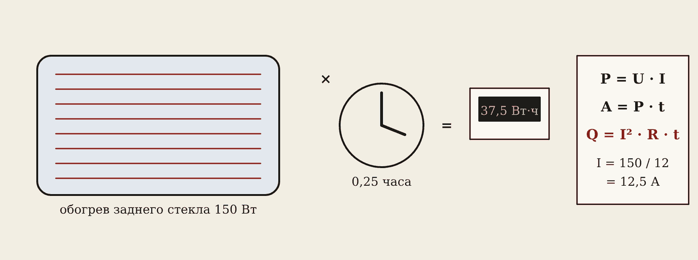

1. Цель и вариант
Цель: измерить мощность резистора при напряжениях 2, 4, 6, 8, 10, 12 В, построить график P(U) и посчитать работу тока за 60 секунд.
Вариант — номер в журнале: сопротивление R (резистор 5 Вт) и напряжение для опыта с работой. Маршруты: А — Proteus, Б — вживую (блок питания, резистор 5 Вт, мультиметр, секундомер телефона), В — браузер, вкладка «Мощность».
Осторожно
При 12 В корпус резистора нагревается до 60–80 °C. Не трогать пальцами, класть на негорючую подставку. Ручку блока питания — на ноль, потом плавно поднимать.
2. Ход работы

- Соберите цепь: источник → ключ → амперметр → резистор, вольтметр — параллельно резистору.
- Поднимайте напряжение от 2 до 12 В с шагом 2 В. Каждый раз записывайте U и I.
- Посчитайте P = U · I и проверьте по формуле P = U² / R.
- Поставьте напряжение своего варианта, включите на 60 с: A = P · t.
Образец, вариант 4: R = 100 Ом.
| U, В | I, мА | P, Вт |
|---|---|---|
| 2 | 20 | 0,04 |
| 4 | 40 | 0,16 |
| 6 | 60 | 0,36 |
| 8 | 80 | 0,64 |
| 10 | 100 | 1,00 |
| 12 | 120 | 1,44 |
Работа при 8 В за 60 с: A = 0,64 · 60 = 38,4 Дж.
3. График P(U) — парабола

P = U · I = I² · R = U² / R
Мощность растёт как квадрат напряжения: напряжение вдвое больше — мощность вчетверо. Постройте график по шести точкам на миллиметровке: U по горизонтали, P по вертикали.
В машине: на 14,2 В (работает генератор) мощность ламп и обогревов на (14,2 / 12,6)² ≈ 1,27, то есть на 27 % больше, чем на 12,6 В.
4. Работа тока и аккумулятор

Работа — мощность за время: A = P · t. В джоулях (Дж), если время в секундах; в ватт-часах (Вт·ч), если в часах. 1 Вт·ч = 3600 Дж.
Обогрев стекла 150 Вт за 15 минут: 150 · 0,25 ч = 37,5 Вт·ч = 135 000 Дж.
Ёмкость аккумулятора в ампер-часах показывает, сколько он отдаст: АКБ 60 А·ч разрядится наполовину (30 А·ч):
- током утечки 40 мА — за 30 / 0,04 = 750 часов, около месяца;
- забытыми габаритами (1,7 А) — за 18 часов;
- ближним светом (9,2 А) — за 3,3 часа.
Предохранитель выбирают по току I = ΣP / U с запасом 20–30 %: фары 2 × 55 Вт → 9,2 А → предохранитель 15 А.
5. Маршруты А и В
Proteus: RES (Resistance = R), BATTERY (Voltage = 2), DC AMMETER (Milliamps) последовательно, DC VOLTMETER параллельно R. Запуск ▶, записать, остановить, Voltage = 4 … 12. Работу считать вручную.
Браузер: номер варианта, ползунок 2 … 12 В, «Записать точку». Поставьте напряжение варианта и «Включить на 60 с». Внизу проверьте мощности и работу.
6. Выводы и защита
Шаблон выводов:
- При увеличении напряжения от 2 до 12 В мощность выросла от … до … Вт.
- Напряжение выросло в 2 раза (с … до … В) — мощность выросла в … раза: P = U² / R.
- Работа тока при … В за 60 с — … Дж; энергия ушла в тепло (резистор нагрелся).
- При включении мощных потребителей растёт ток, напряжение бортсети проседает на внутреннем сопротивлении АКБ и проводах.
Мини-исследование: найдите мощности 6 потребителей любой машины (лампы, обогревы, вентилятор), посчитайте ток каждого и общий.
Словарик
- Мощность — энергия за секунду, ватт [Вт].
- Работа тока — энергия за время, джоуль [Дж]; 1 Вт·ч = 3600 Дж.
- Закон Джоуля–Ленца — тепло в проводнике Q = I² · R · t.
- А·ч — ёмкость аккумулятора: ток × время разряда.
Эталоны в тетрадь
Перепишите в тетрадь по билетам — каждый эталон на отдельную страницу, с рисунком и строкой «Мой пример».
Работа и мощность тока
Работа и мощность электрического тока, закон Джоуля–Ленца. Ёмкость АКБ в А·ч. Выбор предохранителя по мощности потребителей.
- Работа тока A = U·I·t, джоуль [Дж]; 1 Вт·ч = 3600 Дж. Мощность P = U·I = I²·R = U² / R, ватт [Вт].
- Закон Джоуля–Ленца: Q = I²·R·t — тепло в проводнике. Ток вдвое больше — тепла вчетверо.
- Ёмкость АКБ — сколько заряда она отдаёт, ампер-час [А·ч]: 60 А·ч — это 3 А в течение 20 часов.
- Предохранитель: ток I = ΣP / U, номинал — ближайший больше тока с запасом 20–30 %. Фары 2 × 55 Вт: 110 / 12 ≈ 9,2 А → предохранитель 15 А.
- Как проверить: ток потребителя — амперметром или токовыми клещами, мощность P = U·I.
Проверь себя
Сначала ответьте сами — в тетради или вслух. Потом нажмите на вопрос, чтобы увидеть ответ.
1Как рассчитать мощность и работу тока?
P = U · I, A = P · t.
2Напряжение выросло вдвое, сопротивление прежнее. Что с мощностью?
Выросла вчетверо: P = U² / R.
3Почему при включении мощных потребителей напряжение бортсети проседает?
Больший ток — больше падение напряжения на внутреннем сопротивлении АКБ и на проводах.
4Сколько ватт-часов в 3600 Дж?
1 Вт·ч.
5Сколько часов проработает лампа 5 Вт от АКБ, если взять 30 А·ч?
I = 5 / 12 ≈ 0,42 А; 30 / 0,42 ≈ 72 часа.
Попробуйте в лаборатории
Откройте на телефоне или компьютере — ничего устанавливать не нужно.
Ответы к «Проверь себя»
- P = U · I, A = P · t.
- Выросла вчетверо: P = U² / R.
- Больший ток — больше падение напряжения на внутреннем сопротивлении АКБ и на проводах.
- 1 Вт·ч.
- I = 5 / 12 ≈ 0,42 А; 30 / 0,42 ≈ 72 часа.